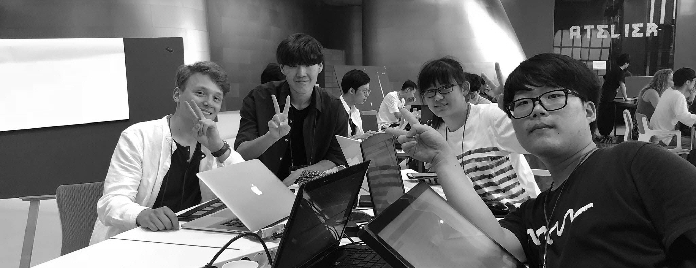
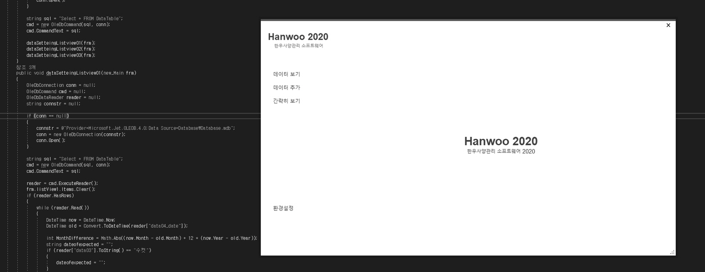
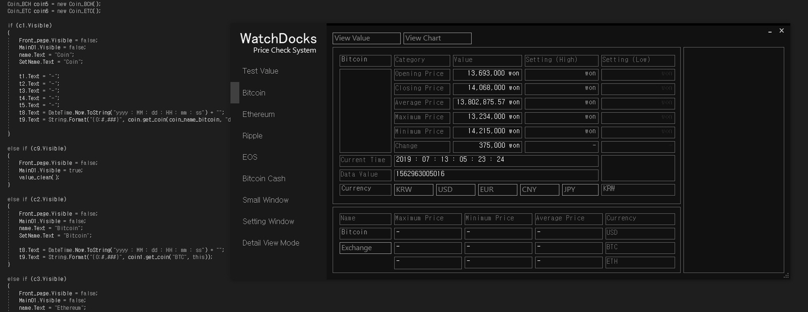
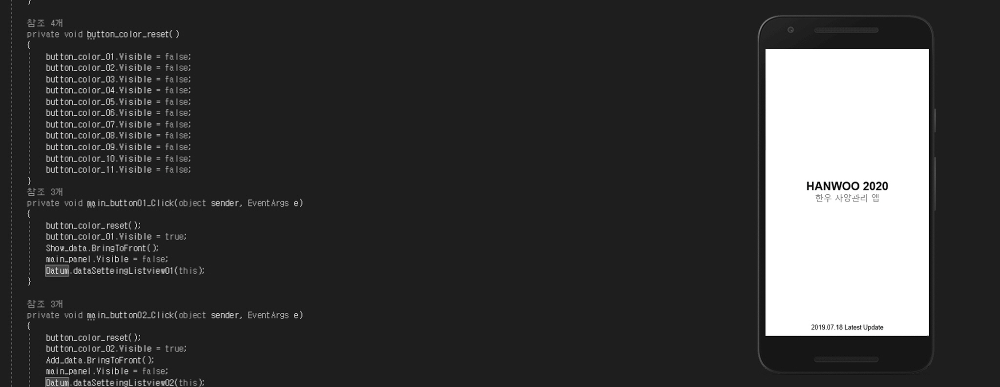
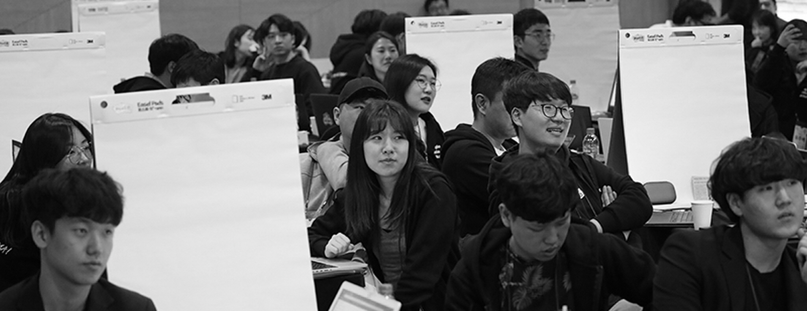
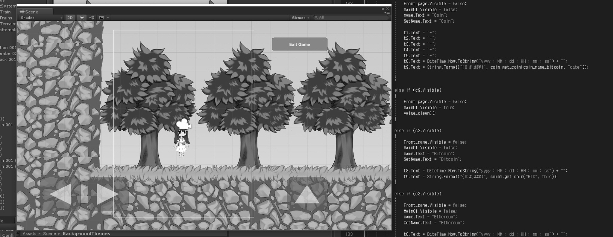
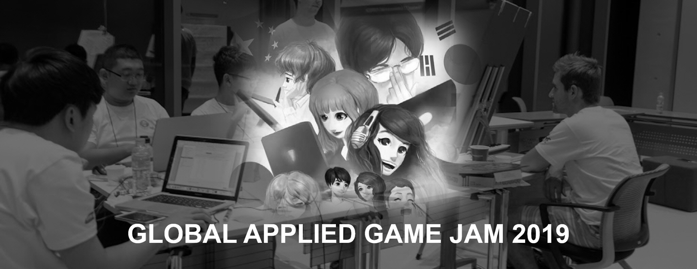
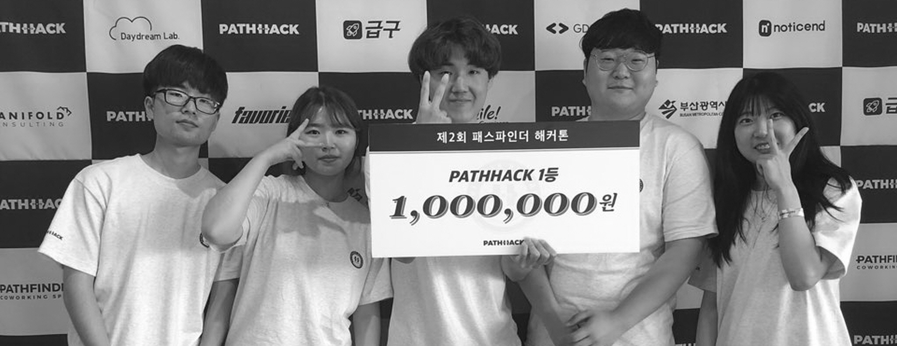

An applied game jam is thematically linked to a real world problem or
challenge, such as education, health care or sustainability. Participants try to create a game
that raises awareness about the challenge, encourages a certain kind of behaviour or motivates
players to figure out possible solutions. The topic of GAGJ 2018 was about Alzheimer.

This project does not aim for profit because the purpose of this project is
making a helpful item in real life for people. Currently, we are developing the hanwoo database
management software. It is for free for all.

This is a Windows application that checks the price and amount of
cryptocurrency transactions in real time and automatically alerts you when they exceed a certain
price or growth rate. We've developed an application that can monitor one or several
cryptocurrency transactions in real time.

This project is additional project of Hanwoo Database Management Application.
It does not aim for profit because the purpose of this project is making a helpful item in real
life for people. Currently, we are developing the hanwoo database management smartphone
applicatipn. It is for free for all.

Media Hackathon is a competition that plans and implements ideas within a
limited amount of time under the theme of media content and services. The theme of the event is
"How to Get to the Truth: Contextual Journalism." Its goal is to implement verification of fact
check and fake news (false manipulation information) on contents, solutions to filter bubbles,
and various ideas for identifying original sources and actively consuming news, and develop them
into actual service prototype types.

I am developing games as a hobby. I like to create my own story and make simple
games using the Unity engine and C# programming language. I am currently developing a new game.
This project is a project other than the GAGJ 2018 game project and the GAGJ 2019 game project.
Cosmos is proud to present its premiere hackathon of the year—the 2019 HackAtom
is coming to Seoul, South Korea. Preceding BUIDL ASIA 2019, for 72 hours straight, the HackAtom
will host Korea's best hackers in the Seoul Startup Hub. Teams will compete to take home the
$20,000 grand prize, rewarded to the best team that builds the Interchain vision.

An applied game jam is thematically linked to a real world problem or
challenge, such as education, health care or sustainability. Participants try to create a game
that raises awareness about the challenge, encourages a certain kind of behaviour or motivates
players to figure out possible solutions. The topic of GAGJ 2019 was about food for possible
future.

Pathhack Hackathon 2019 is for college/university students in South Korea.
Students made items about practical SW/App for people or solution of problems in daily life. We
made a hackathon team building smartphone application for this hackathon. We got the first prize
in this hackahton.
KOREA CLINICAL DATATHON 2019 is a competition. Doctors, clinical trial
researchers, data scientists, and students make teams to solve medical and clinical problems
with AI and actual medical data (MIMIC-III, Seoul National University Hospital VitalDB, Ajou
University Medical Center CDM)